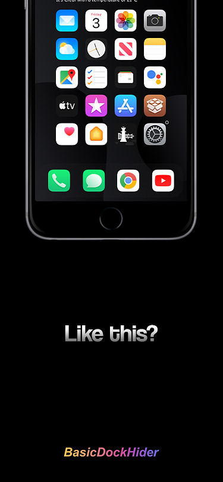
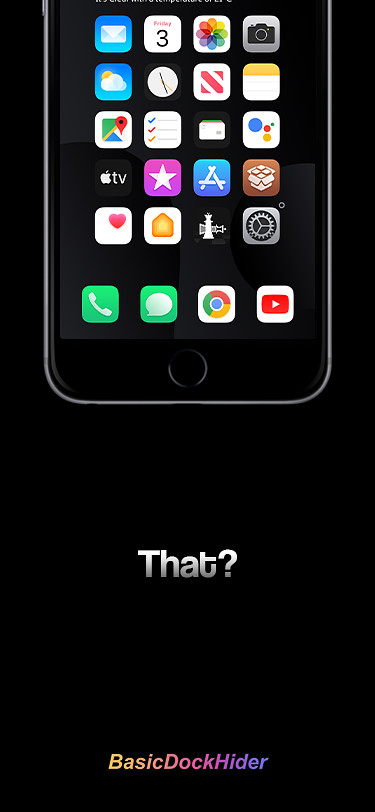
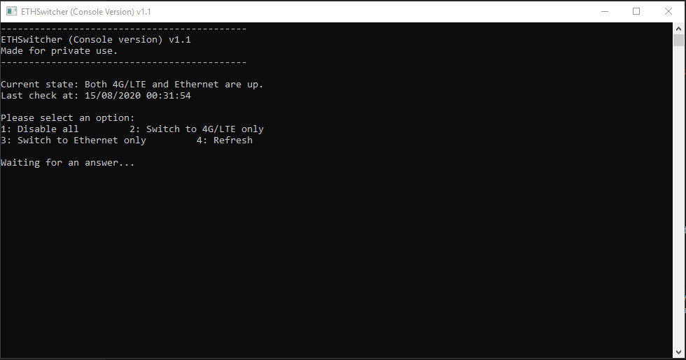
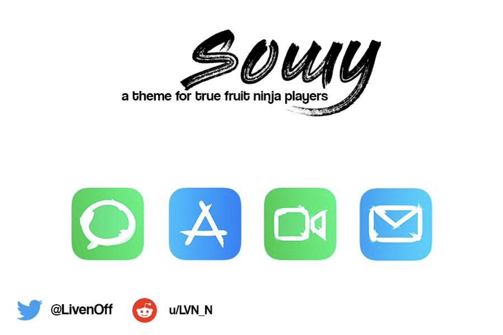
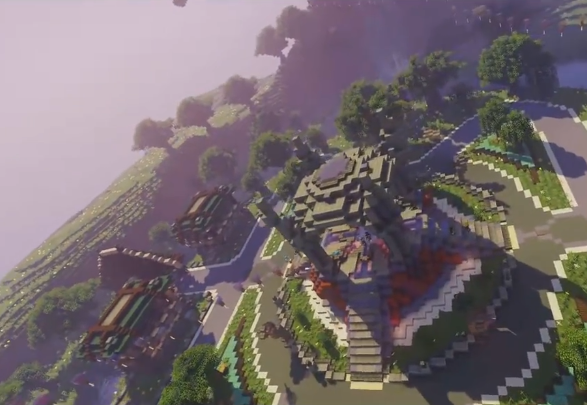
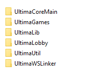
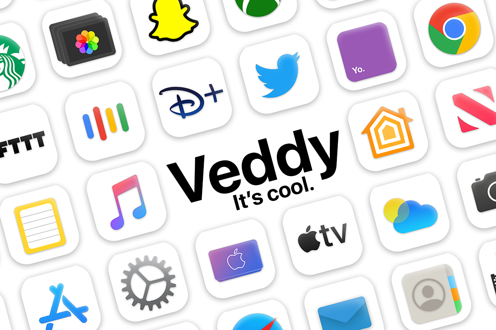

BasicDockHider
It's my first tweak that really came on a repo! Of course it is not really complicated but when you need a tweak to do that, it's cool :)
If you did not understood by the title, this tweak is allowing users to hide their dock background or precisely its opacity.
You can get it on the Twickd repo: https://repo.twickd.com (Tweak page)


Burgar King
This is a theme is never released, might (a day) rework on it and release it.
Basically, it is a theme that changes every icon to a Burger King icon with the "Burger King" text changed to the app name
It is close to be released, I only have to finish the Calendar icon (but for that I have to create a font idk for now because the day and date aren't static).
For now, no screenshots!
Emer
Ouuu, this is HOT, real HOT, but It's a secret :) I can only tell you that it's free, and it's a BIG BOI, stay tuned!
eta s0n
ETHSwitcher
It's a desktop app that I made on Java and C#, it's only made for my personal use BUT it's open source, so you can modify it to make it YOURS :) (The Java one has a GUI but it's not stable and the C# is only a Console/Terminal app, I started to work on a C# GUI but never finshed it because the console one is okay for me.)
What does it do ? It's real simple but it can be useful if you have to switch between personal hotspot and your network a lot, for instance
It disables and enables your interfaces to make you switch from network A to network B.
This can be a very big app but I only made it so it responds to what I want it to do
Might make a configurable public version, but it would be more on C#. A BIG hot one.


HapticSystem
I will never release this one on a big repo, why ? Just found out that it has already been made. Check Litten's Rose tweak on her repo: https://repo.litten.love
Everything was made so I can release it s0n but no, I even made a video about it! (It's an old build but here it is!), if you still want it: Yes! I will give you the .deb, just ask me on @LivenOff !


LIG
or Liven Icon Generator, should be more Resizer but it is what it is
It's a Java app that was made to simplify iOS icon resizing, with LIG, you can resize your icons to @3x, @2x, ~ipad etc
For now the project is on hold but I will soon restart working on it to add customizable resolution for custom prefixes etc
That way you can rename potato.png (512px) into potatoLITTLE (128px) & potatoCATCEN.png (400px) if you want, even if it's stupid.

SlashSlash
SlashSlash is my first iOS widget (for XenHTML), it is a lockscreen clock & date widget.
It does not require XenInfo and is customizable (as you can see in the screenshots below).


Sowy
Sowy is my first real iOS theme project, its a "calligraphy-style" theme, icons are made with a specific brush.
As I'm not really satisfied of every icon I made, it's not released yet.
Below is the only icons that I revealed. There are my base icons for the theme (becauses it's the icons I'm the most satisfied of.)

Project Ultima2
Ouh, this one's a big one.
It all started in the end of 2017, me and some friends started making a Minecraft Server (as every kid at this time). It was a cheap server but I started doing every games in Skript (A simplified Minecraft coding language).
The server was based on the Rush minigame that is played (and still played now) by 50-60% of the French MC community (way more skilled than your bedwars and shit lol). And after almost a year, it closed because I wasn't playing MC anymore.


Ultima2 - Restarting from Zero
And there we go, nostalgia hits and me and a friend, in January 2019 (it's been a while) we decide to restart from ZERO, and recreate all but better. Only ProtocolLib as external plugin, every plugin will be made by US. Time flies and the server is almost ready but we dont really wanna keep working on it, idk if it will come a day but with this year of hard-work, we learned a lot, was fun.
Not only a server, a whole network
That's right, I worked myself a lot on the website. But this one is special, it is the center of the network, the plans where to have synchronized accounts between MC, the Website and the Discord Server (Spoiler: it is done). With that, you can chat with everyone on every platform, your IG rank doesn't only give you IG perks, but also Discord rewards and websites things. We can (with webhooks and a JSONAPI) control the network from the Website's admin panel, we can ban members from the network, write news, open/close/whitelist users etc...
All of this data where stored and synchronized between the website database and a MC plugin entierly made made by @Thalrod_
Current project progress:
Website : 90%
Discord bot and webhooks : 30%
Minecraft server : 80%
Minecraft webhooks and JSONAPI : 100%

Even if this never made it out, this is the project I'm the most proud of :)
EDIT: My contributions on this project are now open source! -> Click here
Veddy
This theme is releasing soon, almmmost done... It has a dark version too!

WazeDecoy
This is a C# program that, yes, place decoys on Waze! With that I place police around my house so people "slow down", at the beggining it was quite a joke but it turned into a reality
To achieve that, I used Charles Proxy to intercept Waze requests with its Protobuf API (www.rtproxy.waze) and I basically copied the login commands and the decoy placing command. No API token or anything, and I can also place decoy everywhere I want and create virtual traffic jams without being there!
I also saw that you can login into an account really easily by seeing the request (and you can do whatever you want with it).

And I installed the program on a Raspberry Pi Zero W (Raspbian Buster installed) to make it run 24/7! (It's still C#, I used Mono to make it work on Raspbian.)
WhatsUp
This page hasn't been made yet, check back later!
Error
Oops, I think I messed up that one, please contact me at @LivenOff and tell me that I am stupid and I forgot to link a navbar item to my navbar display, Thanks!
Hey there!
Please select a category, it's cold out there.